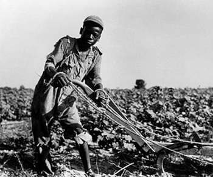
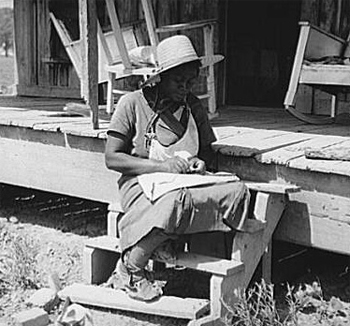

|
Sharecropping replaced slave gang labor after the Civil War. The cotton
plantations were cut up into small parcels, usually less than 40 acres, with the
parcels farmed by free African American families. The cotton grown by the former
slaves was divided between the planter, the merchant, and the farmer. The
|

A 13-year-old sharecropper in Alabama
|
conditions of sharecropping often brought black laborers into dependency and
debt, making it difficult for them to improve their economic position in the New
South.
After 1865, most freedmen worked for their former owners on a year-to-year
contract. These contracts usually offered food and a small monthly stipend in
exchange for working under gang labor, which was too much like slavery for
African Americans. They felt that freedom entitled them to break as far as
possible from the world of pre-war plantations. In great numbers, they broke
their contracts and tried to lease small plots of land to live as independent
farmers. One sympathetic observer wrote: "The sole ambition of the freedman at
the present time appears to be to become the owner of a little piece of land,
there to erect a humble home, and to dwell in peace and security at this own
free will and pleasure."
Rejecting plantation labor, the freed people and the plantation owners came
up with a compromise, which was sharecropping. One they settled on a parcel of
land, the ex-slaves entered into credit relationships with local merchants and
landowners. Over time, a relatively predictable system was established.
Landowners gave freedmen the bare necessities to farm the land: seeds, tools,
fertilizer, clothing and food. In return, for the use of the land, sharecroppers
paid plantation owners or landlords a share of the yearly harvest, usually about
half. The freedmen retained some of their crop, to feed their families and to
pay merchants (owners could also be merchants) for goods purchased on credit
during the year. These goods were often sold at inflated prices and with high
interest rates. Thus, by the end of the year the tenant generally owed so much
to the landowner that the debt could not be entirely repaid. Essentially,
freedmen moved from lives of chattel slavery to lives of debt peonage.
Although sharecropping was especially common among African-American freedmen,
|

An Arkansas sharecropper
|
it also affected white farmers. Yeomen who sought to participate in staple crop
production were themselves caught in the web of debt that merchants could spin.
This situation, which divided prosperous white landowners from indebted whites
and blacks created a potential racial problem for southern leaders. The class
divide between rich and poor whites held open a possibility that black and white
farmers might unite politically.
Racism put an end to cross color unity. Organizations such as the Ku Klux
Klan had formed as early as 1866, fostering white supremacy and solidarity.
Because of this divide, sharecropping for white farmers proved a very different
experience than for African Americans. Poverty was a serious problem, but white
tenant farmers could count on the judicial system, community support and family
ties to help in their relationship with the owners.
While sharecropping prevented African Americans from enjoying the economic
benefits of emancipation they had expected, it was not slave labor, and it
allowed a limited amount of independence and power.
Source: Joan Waugh, ed., Facts on File Encyclopedia of American
History: Civil War and Reconstruction, 1856 to 1869 (New York: Facts on
File, 2003), 315-16.
|